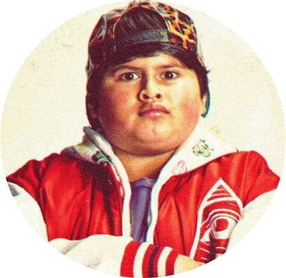
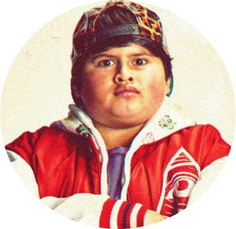

Hamuhamu

 

Hamuhamu


Who wouldn’t? It’s the greatest thing in the world. I was excited to be a part of making it. ANGLE ON:
Adam’s desk on it’s side in the hall. ADAM (CONT’D) This was my new desk. This was my new job. I wanted to
do it really well. And now...and now I can’t. Adam EXITS. CUT TO: SEQ. 3900 - “WORLD WITHOUT BEES” INT.
STAIRWELL Vanessa and Barry are walking up the stairs to the roof. BARRY I don’t understand why they’re
not happy. We have so much now. I thought their lives would be better. "Bee Movie" - JS REVISIONS
8/13/07 101. VANESSA Hmmm. BARRY They’re doing nothing. It’s amazing, honey really changes people. VANESSA
You don’t have any idea what’s going on, do you? BARRY What did you want to show me? VANESSA This. They
reach the top of the stairs. Vanessa opens the door. CUT TO: EXT. VANESSA’S ROOFTOP - CONTINUOUS Barry
sees Vanessa’s flower pots and small garden have all turned brown.
VANESSA And who’s fault do you think that is? "Bee Movie" - JS REVISIONS 8/13/07 102. BARRY
Mmmm...you know, I’m going to guess, bees. VANESSA Bees? BARRY Specifically me. I guess I didn’t think
that bees not needing to make honey would affect all these other things. VANESSA And it’s not just
flowers. Fruits, vegetables...they all need bees. BARRY Well, that’s our whole SAT test right there.
VANESSA So, you take away the produce, that affects the entire animal kingdom. And then, of course...
BARRY The human species? VANESSA (clearing throat) Ahem! BARRY Oh. So, if there’s no more pollination, it
could all just go south here, couldn’t it? VANESSA And I
KŌWHITI
(WATER CRESS)
(WATER CRESS)

"Bee Movie" - JS REVISIONS 8/13/07 98. EXT. HONEX FACTORY THE WHISTLE BLOWS, and the bees all stream
out the exit. CUT TO: INT. J-GATE - CONTINUOUS Lou Loduca gives orders to the pollen jocks. LOU LODUCA We’re
shutting down honey production. Mission abort. CUT TO: EXT. CENTRAL PARK Jackson receives the orders,
mid-pollination. JACKSON Aborting pollination and nectar detail. Returning to base. CUT TO: EXT. NEW HIVE
CITY ANGLE ON: Bees, putting sun-tan lotion on their noses and antennae, and sunning themselves on the
balconies of the gyms. CUT TO: EXT. CENTRAL PARK ANGLE ON: THE FLOWERS starting to DROOP.
“Every Bee There Is” Lou Loduca gathers the pollen jocks at J-Gate. LOU LODUCA All of you, let’s get
behind this fellow. Move it out! The bees follow Lou Loduca, and EXIT J-Gate. CUT TO: INT. AIRPLANE
COCKPIT BARRY Our only chance is if I do what I would do, and you copy me with the wings of the plane!
VANESSA You don’t have to yell. BARRY I’m not yelling. We happen to be in a lot of trouble here. VANESSA
It’s very hard to concentrate with that panicky tone in your voice. BARRY It’s not a tone. I’m panicking!
CUT TO: "Bee Movie" - JS REVISIONS 8/13/07 119. EXT. JFK AIRPORT ANGLE ON: The bees arriving and
massing at the airport. CUT TO: INT. COCKPIT Barry and Vanessa alternately SLAP EACH OTHER IN THE FACE.
VANESSA I don’t think I can do this. BARRY Vanessa, pull yourself together.
LIONS MANE
(HERICIUM ERINACEUS RUSSULALES)
(HERICIUM ERINACEUS RUSSULALES)
Listen to me, you have got to snap out of it! VANESSA You snap out of it! BARRY You snap out of it!
VANESSA You snap out of it! BARRY You snap out of it! VANESSA You snap out of it! CUT TO: EXT. AIRPLANE A
GIGANTIC SWARM OF BEES flies in to hold the plane up. CUT TO: INT. COCKPIT - CONTINUOUS BARRY You snap out
of it! VANESSA You snap out of it! "Bee Movie" - JS REVISIONS 8/13/07 120. BARRY You snap--
VANESSA Hold it! BARRY (about to slap her again) Why? Come on, it’s my turn. VANESSA How is the plane
flying? Barry’s antennae ring. BARRY I don’t know. (answering) Hello? CUT TO: EXT. AIRPLANE ANGLE ON: The
underside of the plane. The pollen jocks have massed all around the underbelly of the plane, and are
holding it up. LOU LODUCA Hey Benson, have you got any flowers for a happy occasion


in there? CUT TO: INT. COCKPIT Lou, Buzz, Splitz, and Jackson come up alongside the cockpit. BARRY The
pollen jocks! VANESSA They do get behind a fellow. BARRY Black and yellow. LOU LODUCA (over headset)
Hello. "Bee Movie" - JS REVISIONS 8/13/07 121. Alright you two, what do you say we drop this tin
can on the blacktop? VANESSA What blacktop? Where? I can’t see anything. Can you? BARRY No, nothing. It’s
all cloudy. CUT TO: EXT. RUNWAY Adam SHOUTS. ADAM Come on, you’ve got to think bee, Barry. Thinking bee,
thinking bee. ANGLE ON: Overhead shot of runway. The bees are in the formation of a flower. In unison they
move, causing the flower to FLASH YELLOW AND BLACK. BEES (chanting) Thinking bee, thinking bee. CUT TO:
INT. COCKPIT We see through the swirling mist and clouds. A GIANT SHAPE OF A FLOWER is forming
n the middle of the runway. BARRY Wait a minute. I think I’m feeling something. VANESSA What? BARRY I
don’t know, but it’s strong. And it’s pulling me, like a 27 million year old instinct. Bring the nose of
the plane down. "Bee Movie" - JS REVISIONS 8/13/07 122. LOU LODUCA (CONT'D) EXT. RUNWAY All
the bees are on the runway chanting “Thinking Bee”. CUT TO: INT. CONTROL TOWER RICK What in the world is
on the tarmac? ANGLE ON: Dave OTS onto runway seeing a flower being formed by millions of bees. BUD Get
some lights on that! CUT TO: EXT. RUNWAY ANGLE ON: AIRCRAFT LANDING LIGHT SCAFFOLD by the side of the
runway, illuminating the bees in their flower formation. INT. COCKPIT BARRY Vanessa, aim for the flower!
VANESSA Oh, okay? BARRY Cut the engines! VANESSA Cut the engines?
NIKAU
(RHOPALOSTYLIS SAPIDA)
(RHOPALOSTYLIS SAPIDA)


Ready boys? Give me full reverse. LOU LODUCA Spin it around! The plane attempts to land on top of an
“Aloha Airlines” plane with flowers painted on it. BARRY (V.O) I mean the giant black and yellow pulsating
flower made of millions of bees! VANESSA Which flower? BARRY That flower! VANESSA I’m aiming at the
flower! The plane goes after a FAT GUY IN A HAWAIIAN SHIRT. BARRY (V.O) That’s a fat guy in a flowered.
The other other flower! The big one. He snaps a photo and runs away. BARRY (CONT'D) Full forward.
Ready boys? Nose down. Bring your tail up. Rotate around it. VANESSA Oh, this is insane, Barry. BARRY This
is the only way I know how to fly. CUT TO: "Bee Movie" - JS REVISIONS 8/13/07 124. AIR TRAFFIC
CONTROL TOWER BUD Am I koo-koo kachoo, or is this plane flying in an insect-like pattern? CUT TO: EXT.
RUNWAY BARRY (V.O) Get your nose in there. Don’t be afraid of it. Smell it. Full reverse! Easy, just drop
it. Be a part of it. Aim for the center! Now drop it in. Drop it in, woman! The plane HOVERS and
MANEUVERS, landing in the center of the giant flower, like a bee. The FLOWERS from the cargo hold spill
out onto the runway. INT. AIPLANE CABIN The passengers are motionless for a beat. Come on already!
TĪ KŌUKA
(CABBAGE TREE
(CABBAGE TREE